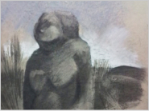
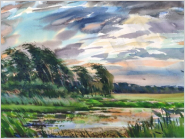
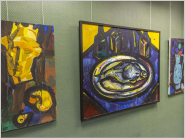
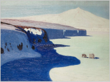
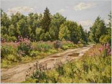
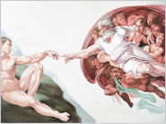

События
-
29 февраля –
31 марта 2024Выставка Андрея Криволапова «Под дождями из слез»29 февраля в выставочном зале Московской государственной консерватории им. П.И. Чайковского состоится торжественное открытие выставки «Под дождями из слез» художника Андрея Криволапова, старшего преподавателя кафедры «Академический рисунок» РГХПУ им. С.Г. Строганова, члена-корреспондента Российской академии художеств.
 -
29 февраля –
15 марта 2024Выставка Александра Стасюка. АкварельПриглашаем студентов, художников и всех влюблённых в акварель на персональную выставку Александра Николаевича Стасюка!
Александр Николаевич заслуженный художник РФ, профессор кафедры «Художественное проектирование интерьеров». Выставка проходит с 29.02.24 по 15.03.24 в выставочном зале МОСХ России по адресу г. Москва, ул. Беговая, д. 7 -
29 февраля –
15 марта 2024Выставка Елены Патлажановой. НатюрмортПриглашаем на персональную выставку Елены Юрьевны Патлажановой! Елена Юрьевна заслуженный художник РФ, профессор кафедры «Монументально-декоративной живописи».
 -
26 января –
10 марта 2024Исследователь и художник: искусство в экспедиции26 января 2024 года в верхних палатах Старого Английского двора и в павильоне «Заповедное посольство» откроется выставка «Исследователь и художник: искусство в экспедиции». Этот мультидисциплинарный кросс-культурный проект посвящен исследованию российской Арктики за последние 400 лет.
 -
2 февраля –
3 марта 2024Выставка произведений народного художника Евгения Ромашко «Магия пленэра»Вологда, Вологодская областная картинная галерея, 2 этаж главного здания.
Выставка народного художника Российской Федерации, академика Российской Академии художеств, заведующего кафедрой академической живописи РГХПУ им. С.Г. Строганова Евгения Викторовича Ромашко -
13 февраля
в 19.00Cеминар из цикла «Права авторов произведений искусства: как ими пользоваться и как защищать»13 февраля 2024 года cостоится очередной семинар из цикла «Права авторов произведений искусства: как ими пользоваться и как защищать». Тема: «Новое в авторском праве».
